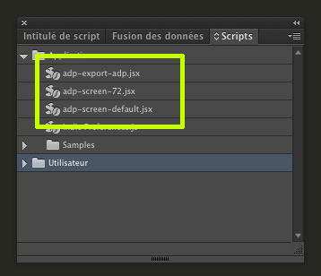

Spécification pour les designers
Préambule
Le but de ce document est d'expliquer aux designers comment exporter les données d'un document indesign nécessaire à l'application web Art Du Papier.
Prérequis sur les préférences Indesign
Afin que les données expotées soient cohérentes pour le web, les unités de la règle doivent être en pixel.

Un autre point à noter est qu'Indesign affiche par defaut les documents par rapport à la résolution de l'écran ; ce qui à pour conséquence de montrer le document plus grand qu'il n'est réellement (c'est à dire 72 dpi).
Nous vous fournissons 2 scripts spécifiques à cette adresse : télécharger ici
- un qui permet d'adapter les préférences au web (résolution à 72 ppi et unités de règle en millimètre)
- un qui permet de reinitialiser les préférences (résolution par défaut et unités de règle en millimètre)
Un troisième script sera fourni qui concerne l'export en lui même.
Pour installer et utiliser les scripts :
- Mettre les fichiers ici : Macintosh HD > Applications > Adobe InDesign CC > Scripts > Scripts Panel
- Lancer InDesign, créer un nouveau document, et ouvrir le panneau de script (Window > Utilities > Scripts)
- Pour lancer un script, double-cliquer sur son nom dans le panneau de script

Le format des documents
NB : Comme vu dans les prérequis, la taille du document doit être exprimé en pixel
La seul contrainte est que le document doit avoir une largeur maximum de 920 pixels avec un ratio d'échelle d'export à 1 (ratio expliqué ci-dessous)
NB : Ratio : le script permet de changer la taille du document à l'export en proposant de spécifier un ratio. Cela peut-être utile pour un document trop grand au trop petit.

NB : Ici le ratio est 1,5. Par exemple, un document de 300px de large sera exporté avec une largeur 450px.
La structure à appliquer aux documents
Le document doit comprendre 3 calques :
- pour tous les éléments non-customisable => nom : _fond
- pour tous les textes customisables => nom : _textes
- pour toutes les photos customisables => nom : _photos

NB : Tous les autres calques ne seront pas pris en compte.
Les éléments non-customisable
Aucune limitation. Le calque sera aplati et transformé en image.
Les textes customisables
les paramètres pris en compte sont encadrés dans l'image suivante :


Les contraintes liées aux textes :
Les contraintes suivantes doivent être suivi pour chaque bloc texte :
- une typo par TextFrame
- une size par TextFrame
- une couleur par TextFrame
- un centrage horizontal par TextFrame
- la hauteur du TexFrame doit comporter un espace supplémentaire en dessous de la dernière ligne correspondant au 1/2 X la taille de la typo en partant de la ligne de base du texte de la dernière ligne (illustré dans l'image ci-dessous)

- Les typos doivent être des google font.
Les photos customisables
Les paramètres pris en compte sont la taille et la position du container et de l'image.